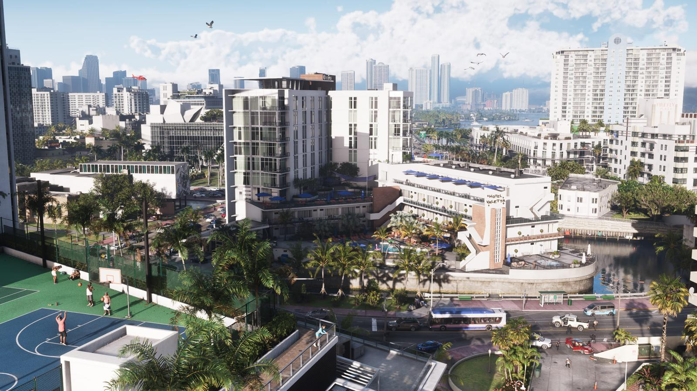
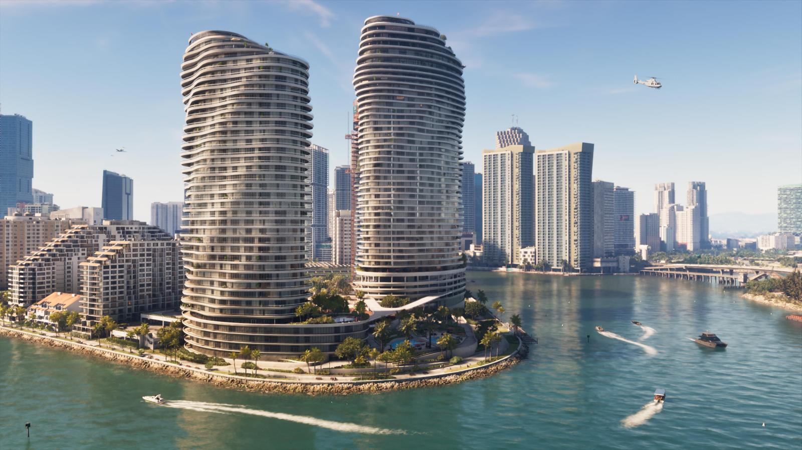
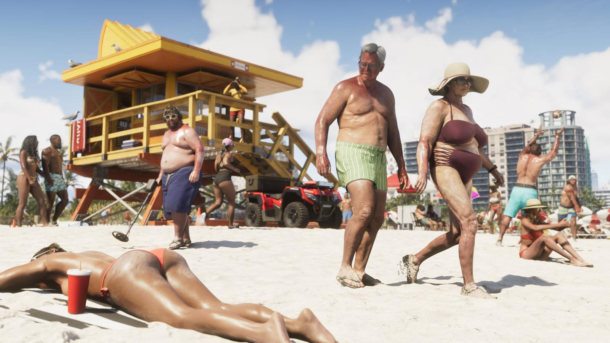
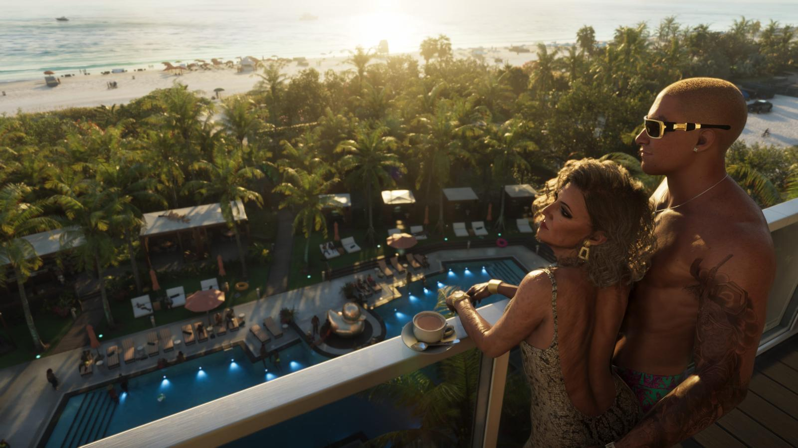
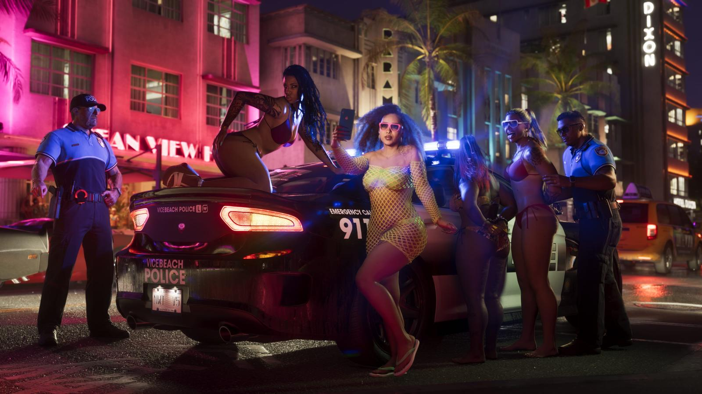
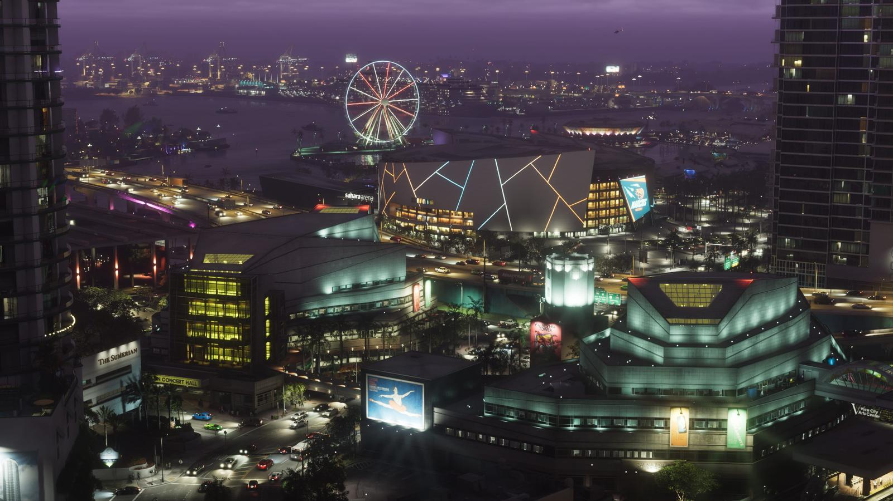
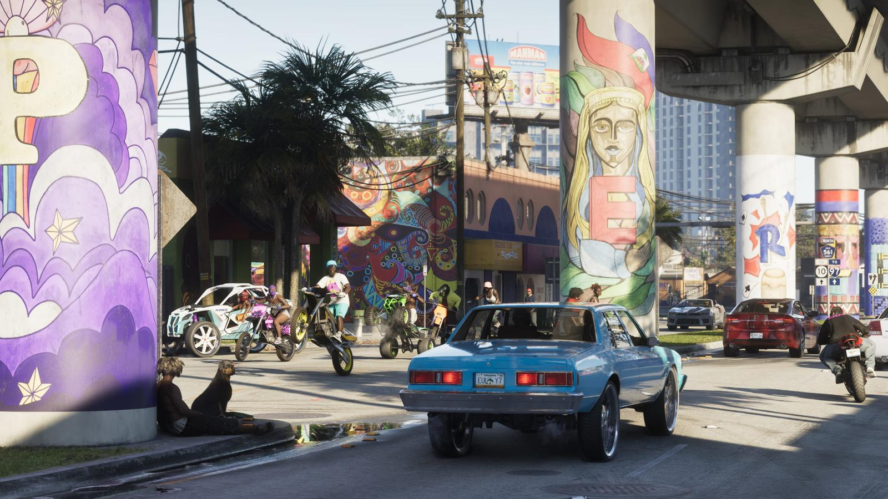

Вайс-Сити в GTA 6: главный город Леониды
Обновлено: 24.09.2026

Коротко
- Вайс-Сити — главный город GTA 6 и аналог Майами.
- Город вернулся в серию впервые со времён GTA Vice City (2002) и Vice City Stories (2006).
- По данным превью, он примерно вдвое больше Лос-Сантоса из GTA 5.
Какой город
Rockstar описывает Вайс-Сити так: со времён 80-х многое изменилось, но город остаётся столицей солнца и развлечений Америки. Это современный мегаполис с небоскрёбами, яхтами, пляжами и огромными контрастами.

Пляжи и набережные
Пляжи с вышками спасателей, бассейны отелей, толпы туристов и местных.


Ночная жизнь
Клубы, неон и вечеринки — узнаваемая сторона Вайс-Сити.


Жилые районы
Кроме туристического центра — жилые кварталы, граффити, эстакады и старые машины.

Источники: Rockstar Games — официальный сайт GTA VI (rockstargames.com/VI), Rockstar Newswire; превью журналистов (VICE).